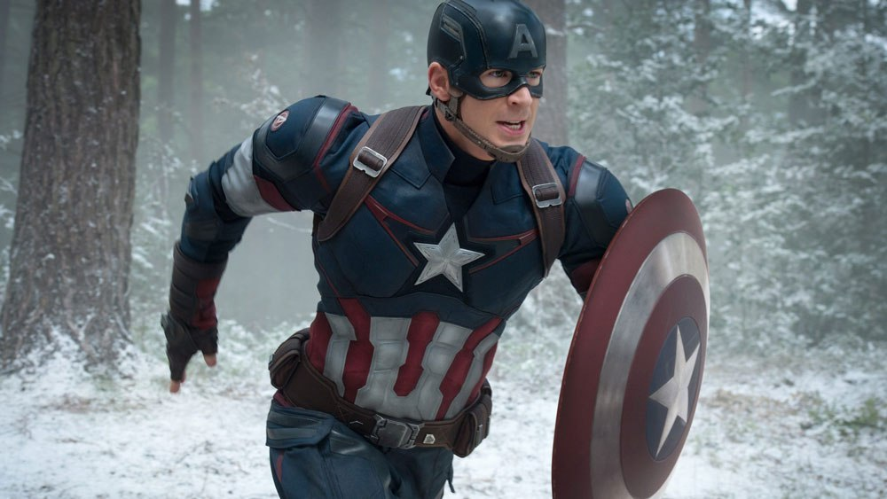

CAPTAIN AMERICA
Capitan America (Captain America), il cui vero nome è Steven Grant "Steve" Rogers, è un personaggio immaginario dei fumetti creato da Joe Simon e Jack Kirby nel 1941 pubblicato negli Stati Uniti dalla Timely Comics e in seguito dalla Marvel Comics. Il personaggio, nato come elemento di propaganda durante la seconda guerra mondiale, dove rappresentava un'America libera e democratica che si opponeva a una Germania nazista, antidemocratica, imperialista e bellicosa, riscosse da subito un grande successo di pubblico tanto che già il primo numero della serie vendette quasi un milione di copie e le vendite dei successivi numeri si mantennero su questi livelli, superando riviste come Time. Il personaggio divenne rapidamente il più popolare dell'editore e venne creato anche un fan club denominato "Sentinels of Liberty".Con la fine del conflitto Cap perse la sua popolarità nonostante un tentativo di rilanciarlo come cacciatore di comunisti durante i primi anni della guerra fredda.Nel 1964 Stan Lee decise di riproporlo come comprimario nella serie Avengers[5] privandolo però degli elementi nazionalistici e dotandolo di una sensibilità e un'umanità tutta nuova, rendendolo protagonista di storie di denuncia sociale rendendolo l'incarnazione della coscienza dell'America. Il personaggio ha avuto trasposizioni cinematografiche e televisive (un serial cinematografico in quindici episodi nel 1944 e un lungometraggio nel 1990) oltre a comparire come comprimario o protagonista in altri lungometraggi di successo nel Marvel Cinematic Universe degli anni 2010. Nella classifica dei cento maggiori eroi della storia dei fumetti del sito web IGN è stato inserito alla sesta posizione.